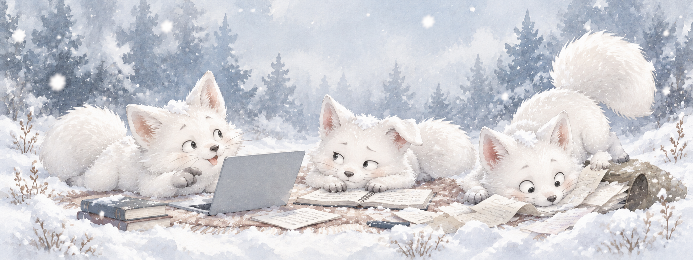

개발
프로젝트를 만들며 배운 코드와 시행착오
잘 모르겠어서 적기 시작했습니다
개발과 보안을 공부하면서 만난 오류, 삽질, 뜻밖의 해결책을 모읍니다. 어제의 내가 오늘의 나를 덜 괴롭히도록.
기록 둘러보기요즘 쌓는 것들
개발부터 워게임, 논문까지. 배운 건 적고, 틀린 건 고치고, 까먹으면 다시 찾아봅니다.
프로젝트를 만들며 배운 코드와 시행착오
문제를 풀며 익힌 접근 방법과 풀이 과정
취약점 분석과 버그바운티 학습 기록
읽고 쓰며 익힌 기술 문서와 블로그 운영
흥미롭게 본 연구와 발표 내용 정리
도전 과정과 준비하며 알게 된 것들
오늘도 뒷공중
정답은 늦어도 대화는 빠른 편.

야, 너 이거 알아?
ㅋㅋ 아는 척하지 마 인마
잠깐만… 거의 다 찾았어